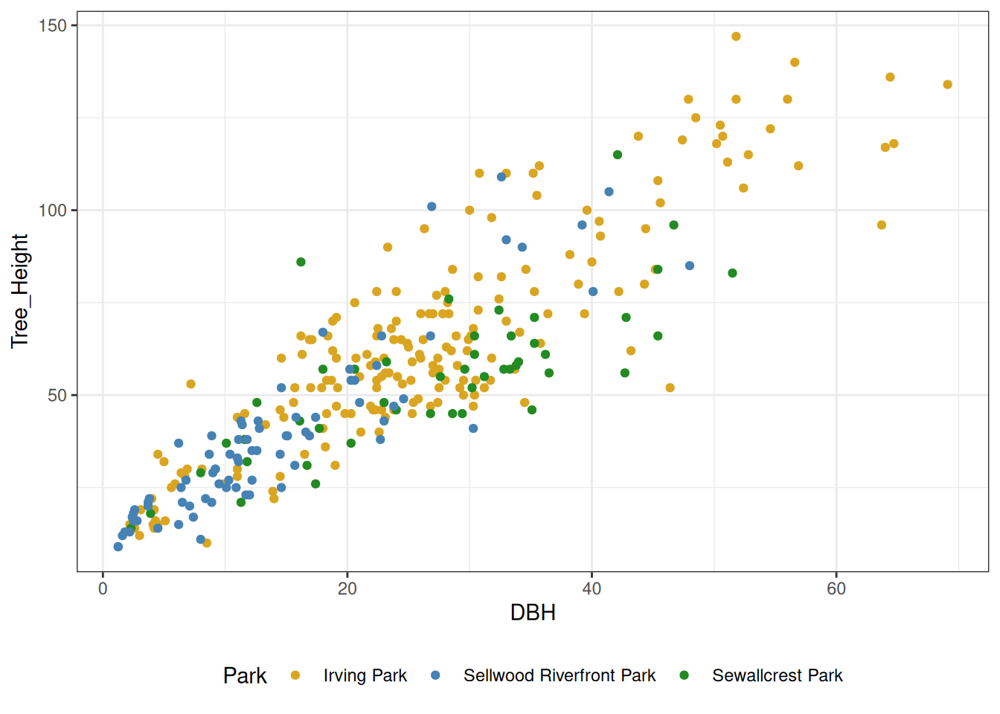
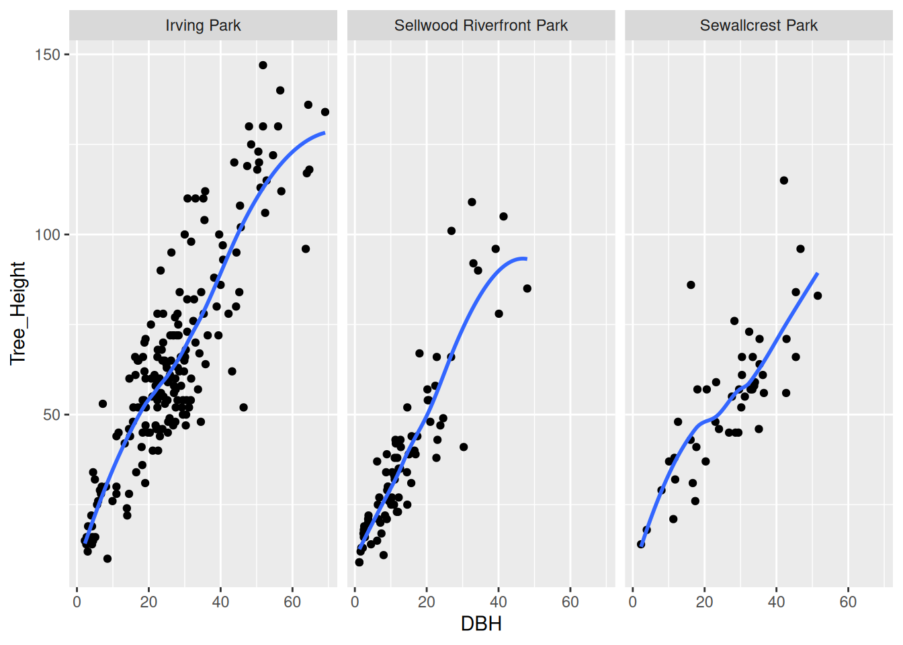

Plotting with ggplot2
FOR 128: Lab 10
Welcome
Welcome to Lab 10! Today, we’ll focus on the grammar of graphics and plotting with ggplot2. Part 1 shows you some plots created in ggplot2 and asks about their aesthetics, geometries, coordinate systems, scales, facets, and themes. Part 2 asks you to create some plots with ggplot2.
Learning objectives
- Understand and be able to identify the components of a plot
- Create beautiful graphics with
ggplot2.
Deliverables (i.e., what to put in the lab drop box)
Upload your rendered PDF (lab_10.pdf) and Quarto (lab_10.qmd) document to the lab drop box. Make sure the Quarto document properly renders to PDF.
Collaborator(s)
List any collaborators you worked with below.
Exercise 0
Load any packages you’ll need for this lab below.
Part 1: Interpreting plots
For this part, we’ll consider some data from the pdxTrees R package. In particular, we will look at data across a few parks (Irving Park, Sewallcrest Park, and Sellwood Riverfront Park) in Portland, Oregon.
Exercise 1
For each plot presented in each part of this exercise, answer the following questions:
- What are the geometries used?
- What are the aesthetics used?
- What values (i.e. variables) are mapped each aesthetic?
- What coordinate system is used?
- What, if any, scales are used?
- Are there any facets? If so, what variable(s) are used to facet?
- What, if any, themes are used?
Part (a)
Part (b)
Part (c)

Part (d)

Part (e)
Part (f)
Part (g)
Part 2: Creating plots
Again, we’ll consider some data from the pdxTrees R package: data across a few parks (Irving Park, Sewallcrest Park, and Sellwood Riverfront Park) in Portland, Oregon.
Exercise 2
Use the pdxTrees package to get the data for all parks in Portland. Then, filter the dataset to only contain rows that correspond to Irving Park, Sewallcrest Park, and Sellwood Riverfront Park. Call the resulting tibble parks. Hint: you can either call get_pdxTrees_parks() and then use a dplyr function to filter for only the parks we are interested in, or specify the park argument of get_pdxTrees_parks() when you call the function. Your resulting tibble should have 314 rows and 34 columns.
parks# A tibble: 314 × 34
Longitude Latitude UserID Genus Family DBH Inventory_Date Species
<dbl> <dbl> <chr> <chr> <chr> <dbl> <dttm> <chr>
1 -123. 45.5 1804 Acer Sapind… 24.9 2017-08-12 00:00:00 ACPL
2 -123. 45.5 1805 Quercus Fagace… 56.9 2017-08-12 00:00:00 QURU
3 -123. 45.5 1806 Quercus Fagace… 43.8 2017-08-12 00:00:00 QURU
4 -123. 45.5 5462 Acer Sapind… 24.5 2017-08-12 00:00:00 ACPL
5 -123. 45.5 5466 Acer Sapind… 17.9 2017-08-12 00:00:00 ACPL
6 -123. 45.5 5469 Acer Sapind… 25.9 2017-08-12 00:00:00 ACPL
7 -123. 45.5 5470 Quercus Fagace… 47.9 2017-08-12 00:00:00 QURU
8 -123. 45.5 5471 Pinus Pinace… 24.4 2017-08-12 00:00:00 PIPO
9 -123. 45.5 6011 Acer Sapind… 31.2 2017-08-12 00:00:00 ACPL
10 -123. 45.5 6013 Crataegus Rosace… 11 2017-08-12 00:00:00 CRMO
# ℹ 304 more rows
# ℹ 26 more variables: Common_Name <chr>, Condition <chr>, Tree_Height <dbl>,
# Crown_Width_NS <dbl>, Crown_Width_EW <dbl>, Crown_Base_Height <dbl>,
# Collected_By <chr>, Park <chr>, Scientific_Name <chr>,
# Functional_Type <chr>, Mature_Size <fct>, Native <chr>, Edible <chr>,
# Nuisance <chr>, Structural_Value <dbl>, Carbon_Storage_lb <dbl>,
# Carbon_Storage_value <dbl>, Carbon_Sequestration_lb <dbl>, …Exercise 3
Recreate the plots from Exercise 1.
Part (a)
Part (b)
Part (c)
HINT: the colors used were “goldenrod”, “steelblue”, and “forestgreen”.
Part (d)
Part (e)
HINT: you can fill a bar plot by another variable by specifying a fill aesthetic mapping.
Part (f)
HINT: the theme used here is from the ggthemes package.
Part (g)
HINT: you’ll need to filter the data for a particular park.
Exercise 4
Create your own plot from the parks data. Your plot should, at a minimum, map at least three variables to geometries, label its aesthetics nicely, have a title, and have a theme different from ggplot2’s default. Have fun with it! Feel free to choose different parks as well if you’d like.
Wrap up
Congratulations! You’ve made it to the end of Lab 9. Make sure to render your final document and submit both the .pdf and .qmd file to D2L.